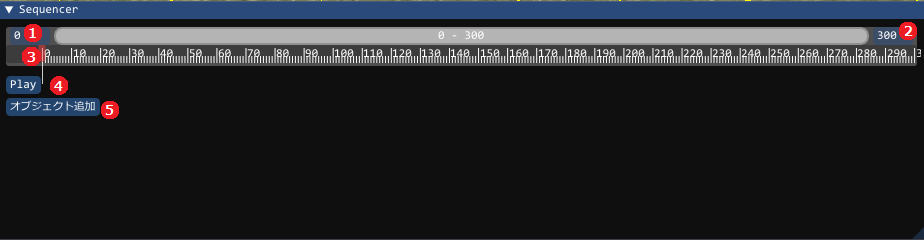
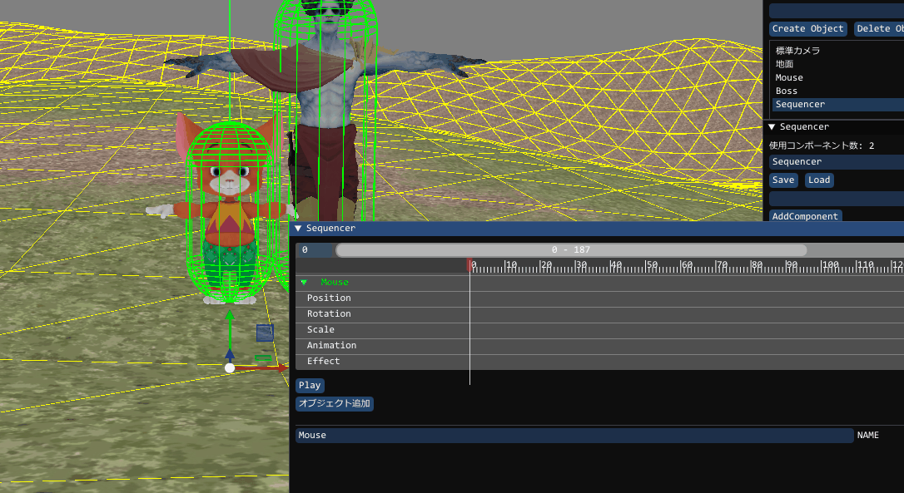
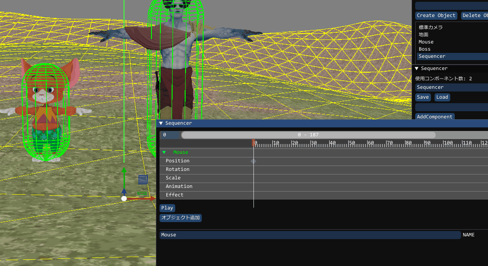
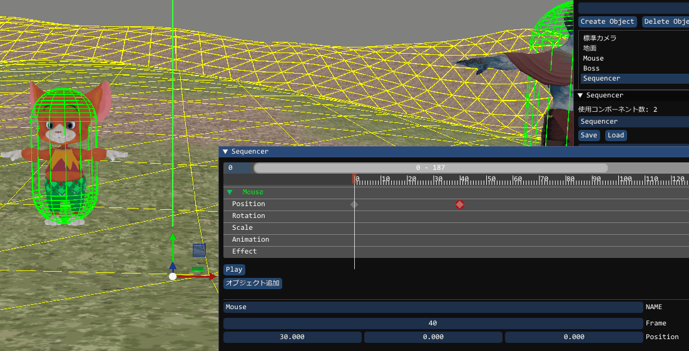
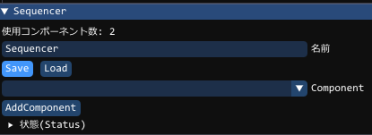

ComponentSequencerとは
デモシーン を用意するため多数のオブジェクトなどを動作させ、演出を作成するための機能です利用方法として
GUIは、別途次のようなウインドウで用意されます。

開始時間、終了時間は、クリックすると数値入力が可能になります。
長くしたり短くしたりすることができます
現在横スクロールに対応しておらず、全メモリが収まる形になります
使いにくいため、この辺りは修正が必要となると思われます
ComponentSequencerでデモを作成する方法
Tutorial_10 Sequencerの使い方にシーン選択します
「Tutorial_10 Sequencerの使い方」のシーンで、作成の説明をします。GUIでシーン選択の方法がわからない場合は、 BPシステム を確認してください。
選択するとシーンには、
が用意されています。
Sequencerの「オブジェクト追加」のボタンを押してみましょう
ここでは、「Mouse」を指定してくださいMouseとオブジェクト名として出てきます
Positionの使用方法
初期位置を設定Positionのラインの「0」辺りで、右クリックすると、「キーの作成」というものが出てきます。
そこでクリックするとキーが作成できます。初期位置を設定します

移動後の位置を設定同じようにPositionのラインの「40」辺りで、右クリックし、キーを作成してください
その後、位置を設定し、「Play」を押してみましょう

「Mouse」のキャラが移動したら成功です。このようにどの時間でどの位置で、どの方向を向いているのかを設定し、
Playを押すとシーケンサーが再生されます。
また、タイムバーを左右に移動させると、その動作も確認できます

TODO アニメーション
工事中TODO Effect
工事中シーケンサーデータのSave
オブジェクトをセーブすることで残すことができます。 間違えてセーブしてしまう可能性もあるため、 作成したら、data/_save/object/Sequencer.txt のデータをコピーして別名で残しておくことをお勧めします

コンポーネントの作成方法
auto sequencer = obj->AddComponent<ComponentSequencer>();
コンポーネントの取得方法
if (auto sequencer = obj->GetComponent<ComponentSequencer>())
{
// objにSequencerコンポーネントがある場合はこのスコープでsequencerとして使用することができます
}
シーケンサーの開始
if( sequencer->Load( "Sequencer" ) ) // セーブしたファイル名を入れてください(.txtは必要なし)
{
// ロードされた場合(シーケンサがオブジェクトは変わっているので取り直す)
if( sequencer = Scene::GetObjectPtr>Object<("Sequencer"))
{
//再生する
if(auto seq = sequencer->GetComponent>ComponentSequencer<())
seq->Play();
}
}
シーケンサーが実行中かチェック
if( sequencer->IsPlaying() )
{
// シーケンサーが実行中ならばここに来ます
}
シーケンサーをストップします
sequencer->Stop();